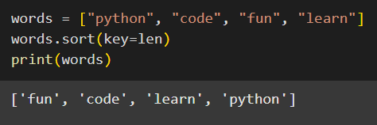

Have you ever wondered how we can sort the values in a dictionary?
It can be a bit tricky since dictionaries don’t store items in any specific order. Let’s see what happens when you use the sorted() function to sort the values.
We are using the sorted() function since the sort() method only works on a list.
The sorted() function works on any iterable.
We have a dictionary with keys as fruit names and values as quantity. Let’s say we want to sort the dictionary based on the quantity of fruits.
We got a sorted list of fruit names, sorted in alphabetical order, but we wanted to sort by quantity (values) and not by names (keys).
The sorted() function sorts the keys of the dictionary, not the values.
To sort based on quantity (values), we need to modify our approach.
We will use the sort() method.
The sort() method can take an optional argument called key. The key is a function that provides a way to customize the sorting logic.
The sort() method will use the key function to figure out how to compare each item.
So basically, you can tell Python to sort based on some custom criteria.
Let’s say you have a list of words and you want the list to be sorted by the number of letters in each word. You can do it like so:

Here, we used the len function as the key function, so sort() arranged the words in order of their length.
The key function allows us to extract some property of the items in the list to sort by. In this case, the length of each word.
Now coming back to our dictionary of fruits, we will use a similar approach to sort by the quantity of fruits.
Firstly, we will loop through the dictionary and create a list of tuples where each tuple contains the fruit name (key) and its quantity (value).
Then, we will define a helper function that tells Python to sort the list by the second element in the tuple (the quantity).
Finally, we will call sort() to sort the list in descending order. Here, key=get_second_element tells sort() to use the second element of each tuple to sort the list, and reverse=True sorts the list in descending order.